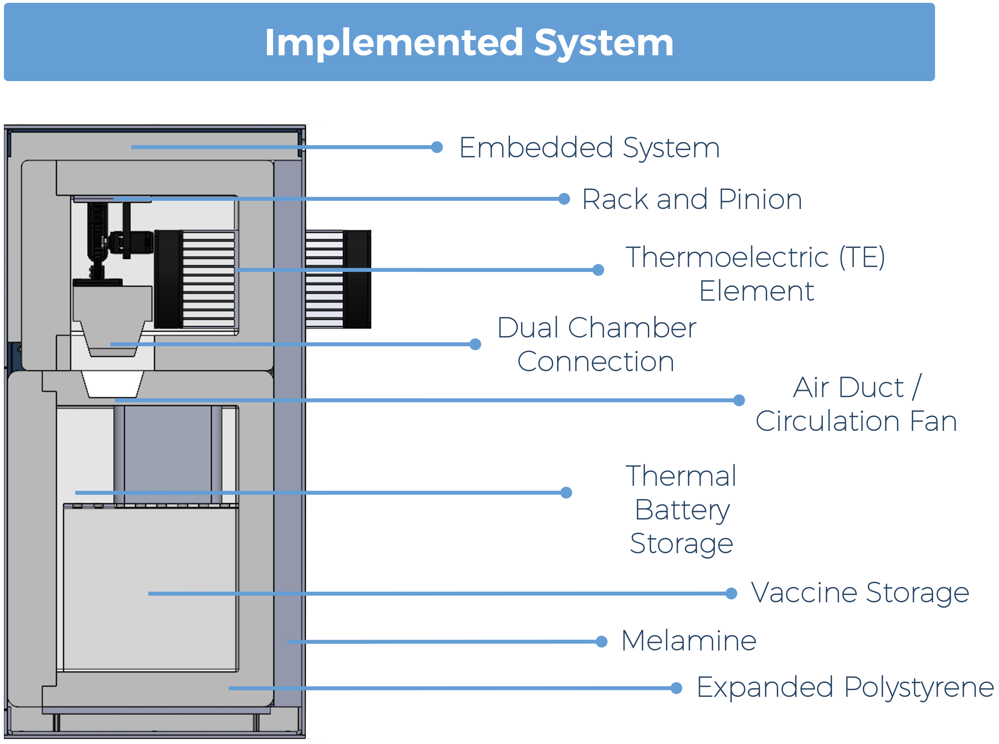
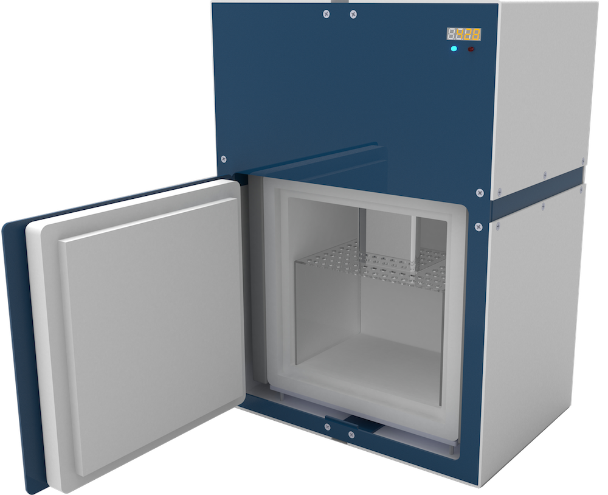
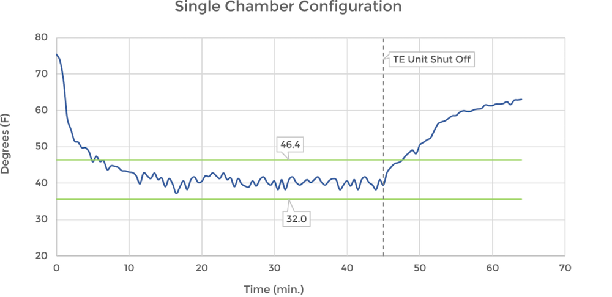
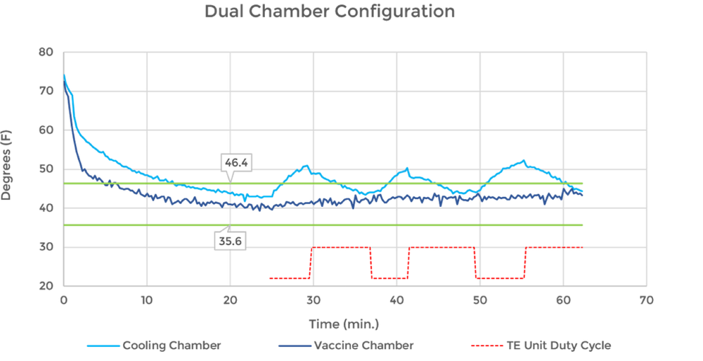

Project VariChill
WINNER - 2017 U Penn Electrical and Systems Engineering Senior Design Competition
Each year, the University of Pennsylvania Electrical and Systems Engineering (ESE) group holds a competition open to all senior electrical engineering students. Each team has a full school year to invent, design and physically create fully-functioning projects that focus on the synthesis of devices and design theory underlying the interface between the material world and the information and work humans seek to exchange with it and each other. The submissions are judged on the degree to which they exemplify the ESE focus on the development and application of systems theory to the design of physical, biological and socio-technical artifacts that improve the human condition. With special authorization by multiple engineering departments, three fellow engineers and I decided to put together an interdisciplinary team. Our team consisted of one Electrical Engineer, two Mechanical Engineers and me, the sole Computer Engineering and Applied Science member. Although we had not decided on a leader at the outset, the interdisciplinary nature of my major, as well as the critical need for all of our systems to be linked together via embedded software, quickly made everyone comfortable with me assuming the leadership role. Our product is a highly efficient, relatively compact and reasonably portable solar powered refrigerator specifically designed to address the extremely tight temperature tolerances necessary to preserve life-saving vaccines as they are being administered throughout challenging environments in third-world countries. Traditionally designed refrigeration systems are heavy, relatively expensive and very difficult to transport. They are also unreliable, with few (if any) people available for maintenance, and are near impossible to operate in the absence of AC/DC electric grid systems. To read more about our award winning project, read below.
VariChill In Depth
Abstract
Each year, more than 3 million people die from diseases that can be prevented by widely available vaccines. Approximately 1.5 million of these deaths are children less than 5 years old. The primary reason for these preventable deaths is the inability to preserve these vaccines at a specific optimum temperature at all times. The goal of our project is to create an efficient and reliable solar powered refrigerator that can maintain appropriate temperature ranges for vaccine storage in developing nations with challenging environmental conditions - particularly in areas with limited access to the power grid. As per guidelines set by the World Health Organization, the fridge will maintain an ambient temperature of between 2 and 8 degrees Celsius and will be able to maintain said temperature without access to solar power for up to 5 days. We hope to achieve this goal through the use of thermoelectric cooling elements, ultra-effective insulation and a passive heat exchange system. A wireless-enabled embedded system will monitor and control the refrigerator's temperature, duty cycle and other key features. The entire system can be powered via a solar panel array, the battery backup or grid power (when it is available).
Problem
Most current vaccine refrigerator solutions are large and expensive, and they use vapor-compression technology that has not changed much since the early 1900’s. These fridges are difficult to transport and, if they break down, the compressor technology makes them difficult and expensive to repair, assuming a technician and requisite parts can be found at all. Additionally, the refrigerant in compressor driven systems, if released into the environment, is as harmful to the atmosphere as driving a car for six months. There is an opportunity to create a more environmentally sensitive and functionally agile solution that addresses many of the shortcomings currently hindering the mainstream market’s products as they are applied to an off-grid, mobile vaccine use.
Solution
To avoid the several pitfalls of compressor driven refrigerators, we utilize a solid-state Thermoelectric (TE) cooler as the source of refrigeration. When DC power is applied, a large temperature differential forms across the TE unit. With a TE cooler at the heart of the cooling unit, our fridge is able to reach the target temperature range of 35.6 - 46.5°F. However, not only does a vaccine fridge need to store these vaccines within this temperature range, but it also needs to be able to maintain this range in perpetuity. A pitfall of a TE cooler is that it must always remain on because the TE unit itself creates a significant vulnerability in the container’s insulation allowing heat to rapidly flow into the vaccine chamber. To address this, we have devised a two chamber design, in which the cooling (top) chamber contains the TE cooling unit and the vaccine (bottom) chamber stores the vaccines and thermal batteries. The chambers are linked via a sealable hole. When cooling, the hole is open and the TE unit cools both chambers (with the aid of fans for proper air circulation). The chambers are made of polystyrene, and lined with melamine for additional insulation. Once cooled to the target range, a servo-driven rack and pinion mechanism forces a plug into the hole and seals the vaccine chamber. When the TE cooler turns off, the vaccine chamber will remain cold, as the cooling (top) chamber rapidly warms. This system allows us to implement a duty cycle so the cooling unit is on for only a fraction of the time, thus extending the lifetime of the battery when solar power is not available.
Full Implementation Images
Side CAD View
Face on CAD Render
System Diagram

Results
Our first iteration of this fridge was a single chamber design. It was cooled by a TE module - sandwiched between 2 heat sinks and fans for proper air circulation and heat dissipation. As shown by the graph below, this cooling unit was able to reach the desired temperature range. But in this configuration, the fridge was unable to maintain the desired temperature range for more than 2.5 minutes once the cooling unit was turned off.  Evident in the second chart, the dual chamber configuration effectively maintained the desired temperature range without need for continuous operation by the TE cooling unit. This fridge can keep vaccines properly stored while implementing approximately a 60% duty cycle. This increases the life time of the battery backup by 1.67 times, helping to maintain the necessary temperatures for several days without access to solar or grid power. 